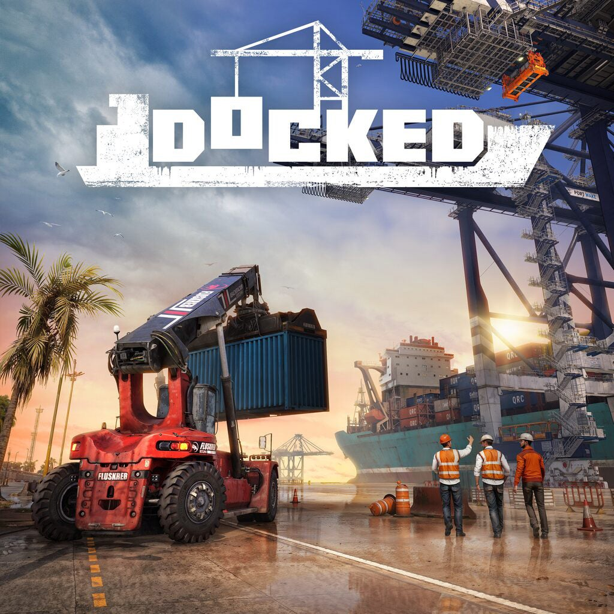

Docked
Genres: Virtual Career
Website
Developer: Saber Interactive
Publisher: Saber Interactive
Platforms: PlayStation 5, PC, Xbox Series X
Released: 2026, March 5
Rated: Not Rated
A longshoreman's job is never done. As the lead operator, you will be tasked with getting hands-on in the daily operation and continuous expansion of your father’s dock in the wake of a devastating hurricane. When the ships roll in, unload heavy cargo. When the flatbeds pull up, ship out vital materials and medicine to those who need it most. Stay on top of repairs and maintain massive equipment to foster the growth of your operation - become more than just any port in a storm. To accomplish your goals of saving the family business you must sign contracts to create and foster new logistical chains, ensuring the profitability of your wharf. Every job you take earns the cash necessary to invest in your operation and acquire new, powerful machinery. Purchase new lots to store your vehicles, upgrade your fueling capacity and power supply, and conquer new milestones for your business. Rebuild Port Wake, one cargo lift at a time.